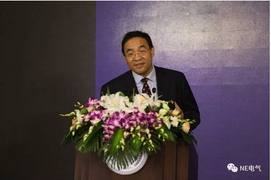
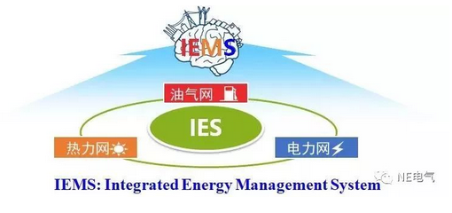

“IEMS可以认为是第四代能量管理系统（EMS），可以解决多能流网络的最优控制问题，即通过多能互补、源网荷协同实现安全供能前提下的效益最大化。”

（图：清华大学能源互联网创新研究院能量管理与调控研究中心主任孙宏斌教授作专题报告）
1. 能源互联网从“概念年”走向“落地年”
去年和前年我认为是能源互联网的“概念年”，那时候大家还在讨论“什么是能源互联网”，“为什么要做能源互联网”，“能源互联网可能会长什么样子”。但是，今年已经进入到了能源互联网的“落地年”，大家都在深入地讨论应该怎么去做。国家能源局、科技部有很多支持项目，资金投入量很大，比如今年国家能源局公布的首批“互联网+”智慧能源（能源互联网）示范项目。
2. 追求效益最大化的最优控制问题
如何通过“多能互补、源网荷协同”实现安全供能前提下的效益最大化，这是在能源互联网示范项目的实施中，专家们都很关心的一个焦点问题。这实现起来并不容易，从技术层面来看，这个焦点问题可归结为复杂的多能流网络的最优控制问题。这个最优控制问题是要追求效益的最大化，效益=收入-费用，约束前提是安全供能。这里的收入包括了售能、售服务，费用有购能、购服务等。优化的手段分布在冷、热、气、电、水、交通，源、网、荷、储等各个环节。约束条件包括供需平衡、运行的物理范围，以及供能安全等。这个焦点问题最终是通过一套系统来实现的，这套系统就叫做多能互补综合能量管理系统（Integrated Energy Management System），简称IEMS。
3. EMS的发展历史
IEMS可以认为是第四代能量管理系统（Energy Management System，EMS）。EMS是在电网调度控制中心应用的在线分析、优化和控制的计算机决策系统，是电网运行的神经中枢和调度指挥司令部，是大电网的智慧的核心。我们课题组研究EMS已有30多年。首先回顾一下EMS的历史。
第一代EMS出现在1969年以前，叫做初期EMS。这种EMS仅包含SCADA供能，只是把数据采集起来，没有实时网络分析、优化、协同控制，网络分析和优化主要靠离线计算，属于经验型调度。现在的园区管理，绝对不能停留在经验型调度的水平上，而是需要精益化的管理，提高核心竞争力。
第二代EMS出现在20世纪70年代初到21世纪初，叫做传统EMS。这一代EMS的奠基者是Dy-Liacco博士，他提出了电力系统安全控制的基本模式，发展了实时网络分析、优化、协同控制，所以在上个世纪70年代，EMS得到了迅速发展。我国1988年完成四大电网调度自动化系统的引进，之后完成消化、吸收、再创新，开发出自主知识产权的EMS。当时清华承担了东北电网EMS的引进、消化和吸收，因为当时东北是重工业基地，东北电网的网调是最大的，全国负荷最大的就在东北。目前国内的EMS已基本国产化，这一时期的调度已经属于分析型调度，上升到了新层次。
第三代EMS是源网荷协同的智能电网EMS，出现在大规模可再生能源发展之后，这时候还没有多能横向的协同，只有源网荷的协同。针对大规模可再生能源不可控、波动性的特点，需要大量的灵活性资源，从源-输，转向荷-配，这时候的EMS可集成利用各类分布式资源，发展分布自律-集中协同架构，从源、网到荷，都有相应的EMS。源有风电场和光伏站的EMS，荷有电动汽车、楼宇和家庭的EMS，网有输电、配网、微网的EMS，这些EMS首先是自律，然后通过通信网联结在一起形成协同，这时候就可以称为EMS家族了，EMS家族有很多成员，不同成员有不同特点，共同实现智能电网的源网荷协同。
第四代或者说下一代EMS,称之为多能互补的综合能量管理系统,也就是IEMS。这里的综合是把各种能源集成和综合。由于各类能源割裂，综合能效低，所以需要综合和梯级利用；同时由于灵活性资源严重不足，大量弃风、弃水、弃光、所以需要拓展到多种能源互联，从多种能源里面找到新的灵活性资源，来支持大规模可再生能源的消纳;通过效益最大化的综合优化调度，在保障供能安全和优质的前提下，降低用能成本，提高综合能源服务的经济效益。
下图给出的就是IEMS的示意图。

它像一个大脑，底下是一个综合能源系统，冷、热、气、电、水、交通，各种能流，叫多能流。前些天我在英国召开的国际应用能源大会（ICAE）上介绍了这个系统，大家公认在世界上还没有先例。今天上午在清华发布的最新成果“园区多能互补综合能量管理系统”就是这世界上第一个IEMS产品。我们课题组将做了30年的电网EMS拓展成IEMS非常困难，学电的人不懂热、气、交通，这时候就需要学习热能、燃气和汽车等其他学科的知识，我们团队最近五年一直在快速地学习，终于成功研制出了IEMS。当然，如果没有之前30年电网EMS的研发经验，再用10年也做不出来。
4 IEMS的主要功能
（1）多能流SCADA
用于实现完整、高性能的准稳态实时数据采集和监控功能，是后续预警、优化和控制等功能的基础，并利用系统软件支撑平台提供的服务。多能流SCADA是IEMS的“感官系统” ，基于能源物联网，采集多能流数据（采样频率：电为秒级，热/冷/气为秒级或分钟级），完成相应的监控功能，并将数据提供给状态估计及后续高级应用功能模块，接收系统运行调控指令，并通过遥控/遥调信号下发给系统设备执行。多能流SCADA的功能界面包括能流分布、场站接线、系统功能、综合监视、操作信息、分析评估、智能报警等。
（2）多能流状态估计
由于多能流传感网络测点分布广、量测种类多、数据质量低、维护难度大、成本敏感度高，所以出现采集数据不全、错误的情况在所难免。因此多能流网络需要状态估计技术提供实时、可靠、一致、完整的网络状态，为IEMS的评估和决策提供基础。多能流状态估计通过补齐量测数据、剔除坏数据，可以实现坏数据的可估计、可检测、可辨识，最终达到减少传感器安装数量、降低通信网络复杂程度、降低传感网络的投资和维护费用的效果，通过提高基础数据的可靠性来提高评估与决策的可靠性，降低能源网络运行事故风险。
（3）多能流安全评估与控制
安全的重要性不言而喻，而能源系统的安全尤其关乎生命和财产安全。一方面需要建立“N-1”安全准则的概念，这个概念就是去关注最薄弱的环节，并且做出预案。上午我们成果的发布会上举了一个例子，是说台湾近期的一次大停电是由气的阀门故障导致的，那么那个阀门就是气-电耦合综合能源系统的一个薄弱环节。所以一定要时刻关注薄弱环节，出现问题一定要有预案，否则会面临巨大的风险。另一方面要关注园区交易关口的安全控制，园区关口的容量配置和运行的成本是个关键问题，一方面是容量越大变压器的投资成本越高，另一方面容量越大电网公司收取的容量费也越高。比如：50MW容量和100MW容量投资和运行的总成本相差很大，如果设计成50MW的容量，万一实际容量超过了，会烧掉变压器。该怎么将关口潮流控制在50MW以内，这就是安全控制问题。在多能流系统中，不同能源系统相互耦合和影响，某一部分的故障和扰动会影响到多能流系统的其他部分，有可能造成连锁反应，因此需要进行耦合分析。可以利用热、气等系统的惯性提供的灵活性，为电系统的安全控制提供新手段，可以利用这些新手段，做协同安全控制。
（4）多能流优化调度
这里有几个重要的概念：启停计划、日前调度、日内调度、实时控制。一个园区或者是城市的三联供、燃气机组、电锅炉都是可以启停的，有一些设备停下来可以降低成本，这就可以根据确定日前的最优启停计划进行启停。然后在启停基础上调节多少出力，这是日前调度。而日内调度是由于风光出力变了、负荷变了，所以日内需要再调度，以此来适应新的适合的发电出力，维持最优的出力和负荷的平衡。最后到了秒级还要进行控制，如对于网络安全问题、调压问题、调频问题，都需要进行实时控制。调度的时间尺度较长，一般以15分钟为单位，控制是以秒为单位，时间尺度较短。在多能流系统中，其可调控的手段比单一能源系统要多，从源网荷储的角度出发，可实现冷、热、气、电等的综合调度和控制。
（5）多能流节点能价
一个园区或者是智慧城市，一定要考虑建设一个非常好的内部的商业模式。内部的商业模式不是对外的，不是对上的，而是对园区内用户的，这样的一个商业模式应该是什么样？最科学的模式就是节点能价的模式。节点能价的模式首先需要通过计算确定各个地方的用能成本是多少，用能成本包括四个部分：一是能量发出来的成本；二是传输损耗的成本；三是网络阻塞的成本；四是多能耦合的成本。然后需要科学精准地计算各个结点的能价，包括冷价、热价、气价和电价，不同时刻、不同地点的价格，只有通过精准计算，才能使园区总的用能成本显著下降，因为可以用价格的信号来引导用户用能。这样整个园区的用能成本则可以通过柔性的能价手段得到显著下降。
节点能价根据供应商的生产边际成本制定，当线路出现阻塞时，各节点的价格根据所在位置的不同而呈现不同的价格，实时价格可以激发用户侧的灵活性。节点能价科学体现了成本，有利于建立公平的内部市场机制。
（6）多能流虚拟电厂
虚拟电厂是对上级市场的商业模式，整个园区或城市都可以变成一个大的虚拟电厂，尽管不是物理电厂，但是有很多储能和冷热电三联供等分布式电源，联合起来就可以变成一个大的可调节的市场主体。因为分布式资源容量小、数量多，市场难以单独管理，通过虚拟电厂的集合，可以通过软件架构实现多个分布式资源协同优化运行，为外部市场提供调峰、调频、调压等服务，有利于总体资源的优化配置和利用。这样的商业模式能够带来很高的经济收益，这在美国已经成为现实。
虚拟电厂在优化调度的基础上，可以将园区内的分布式电源、可控负荷和储能装置聚合成一个虚拟的可控集合整体，从而园区可以作为一个整体参与上级电网的运行和调度。虚拟电厂协调上级电网与分布式资源间的矛盾，充分挖掘分布式资源为电网和用户所带来的价值和效益，实现与电网的友好互动。
如下图所示是多能流虚拟电厂的内部组成架构。
横向来看依次是源网荷储。源侧包括常规的供电设备、CHP机组、燃气锅炉等设备，以及外部电网供电、可再生能源接入；网架分为冷热电等传输系统；荷侧为园区内部的电、热、冷负荷；在储能方面，不同能源子系统均有各自的储能设备。纵向来看依次是电、气、热、冷多能互补运行。不同的能源子系统分别用不同的颜色表示，多种能源转化设备（热泵、CHP、燃气锅炉、溴化锂机组）将不同的能源子系统相耦合。园区内部多种能源形式以虚拟电厂的形式组合在一起综合运行，在保证电、热、冷负荷可靠供应的前提下，实现了能源的梯级利用，提高能效，降低用能成本。并且对于波动性很强的可再生能源而言，综合能源系统具有更多的灵活性，促进了可再生能源的接纳，进一步提高系统经济性。
5 IEMS的应用案例
（1）成都高新西区的“互联网+”智慧能源（能源互联网）示范项目。成都高新西区是约40平方公里的工业园区，IEMS系统对这里进行综合能源的供应与需求分析，实现多能协同优化。以电、气、冷、热等对能源的需求为主，开展基于清洁能源中枢（天然气冷热电三联供、光伏、风电等）的能源互联网示范园区建设，实现对高新西区内天然气、地热能、风光能、蒸汽、冷水、热水、电等能源实施管理。
（2）广州从化工业园区的综合能量管理系统研发和示范项目。这个园区的核心部分大概12平方公里，也是典型的工业园区。工业园的能源格局呈现大容量、多能流、高渗透等特点，具有开展多能协同、多能优化调度等的良好基础条件，是开展“互联网+”智慧能源综合能源服务业态模式示范较为适宜的区域。在园区内建设IEMS系统，提出虚拟电厂和用户需求侧响应模式，实现灵活性资源集群同步化控制技术，最终系统实现部署应用。
（3）广东东莞立沙岛的智慧能源能量运行控制系统研发项目。东莞立沙岛也是约12平方公里的工业园区，立沙岛智慧能源系统分为以下四个层次：第一，热电耦合下的园区能量调控；第二，政策没有放开的情况下，存在约束条件的园区能量管理；第三，政策完全放开的情况下的区域能量管理；第四，未来和大系统之间的交互（交易），打造综合能源供应商。其中能量管理系统的研发分为四个阶段：第一，整体可观，部分可控；第二，整体可控，部分优化；第三，整体优化，部分交互；第四，整体交互，联合优化。
（4）吉林省多能流综合能量管理与优化控制研究项目。吉林省火电机组占比多，没有抽蓄、燃气等灵活调节电源，并且吉林处于高寒地区，冬季供热期长达半年，90%以上火电机组为供热机组，供热期间，火电最小出力超过本省最小负荷，风电消纳压力大弃风问题非常严重，主要原因是供热机组的热-电制约关系和“以热定电”模式显著降低了其调峰能力，挤占了风电空间。怎么用市场的手段来激发多能流的管控和交易，是最具挑战的问题，为此部署了IEMS系统，来研究多能流综合系统的市场交易机制，研究多元市场主体的成本效益，研究并设计示范区域内的用能替代响应，并提出多能流综合能量管理优化控制技术，在解决大规模风电消纳问题的同时实现清洁供暖。